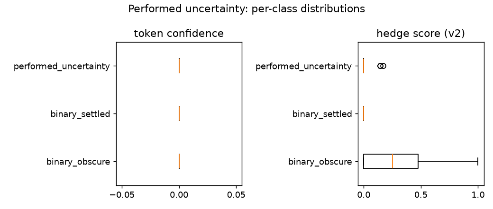

Performed uncertainty
Question
When the model hedges, is it reporting low confidence — or performing uncertainty it does not have? Can a deterministic hedge instrument be separated from the confidence signal, so the two can disagree?
Verdict
The hedge instrument (v2) works, and confident confabulation is a real model behaviour (Qwen 2.5 7B Instruct, 2026-08-12). After the marker list was rebuilt against the two control classes — with the positive class never consulted — hedging separates settled from obscure yes/no questions at AUC 0.83, up from chance (0.56). The 17 obscure answers that still score zero hedge are not instrument misses: the model answers them confidently and wrongly.
Measured
Control classes derived from the same source content, holding question form fixed (all yes/no), so form is controlled rather than confounded:
| class | n | mean confidence | mean hedge (v1) | mean hedge (v2) | answer accuracy |
|---|---|---|---|---|---|
binary_settled |
50 | 0.923 | — | 0.000 (0/50 nonzero) | 47/50 |
binary_obscure |
50 | 0.741 | — | 0.274 (33/50 nonzero) | n/a by construction |
| axis | AUC settled vs obscure |
|---|---|
| confidence | 0.81 |
| hedge, marker list v1 | 0.56 (chance) |
| hedge, marker list v2 | 0.830 |
The obscure set was answered 18 yes / 32 no — the balance rule held and the model did not default
to one polarity. The two confident errors on binary_settled (settled_024, settled_041) were
checked against their keys and are genuine model errors, not curation defects.
Figures

Token confidence (left) and hedge score v2 (right) per response, by class, from the persisted run.
Reasoning
- The v1 marker list sat at chance while the model visibly hedged ("I would need to look up
specific records", "specific details are not publicly available"). The fix was data, not code:
deferral phrasings were drawn from
binary_obscure, false positives checked againstbinary_settled, and the positive class was never consulted. (inference) An instrument built from the classes it is scored on, with the positive held out, is the honest way to tune a lexical detector; the AUC jump is what that discipline bought. - 17 of 50 obscure answers score zero hedge under v2 and are confident confabulations. (inference) That is a property of the model the control set correctly elicits — no hedge instrument can separate these classes fully, because the model is not hedging. A finding, not a defect.
- Confidence (0.81) and hedge (0.83) separate the classes to a similar degree but on different responses. (inference) That is the point of keeping them separate: performed uncertainty is the quadrant where hedge is high and confidence is high, which neither axis can show alone.
- Rank thresholds between the classes are placed by Youden's index and significance-gated (Mann–Whitney), with leakage rates reported — the project's standing "thresholds from controls, never invented" rule.
What it changes
- The hedge instrument v2 is the one used by every later detector that needs a hedge measure.
- Rank thresholds became the shared
youden_cutoffmachinery the conflict and framing probes reuse. - Nothing is served: performed uncertainty stays an offline capability pending a positive-set validation that goes beyond the two controls.
Source
docs/superpowers/specs/2026-07-28-performed-uncertainty-design.md; the control sets and their
behaviour are documented in data/probe_sets/README.md. Persisted report (local, gitignored):
data/performed_uncertainty_analysis.json.